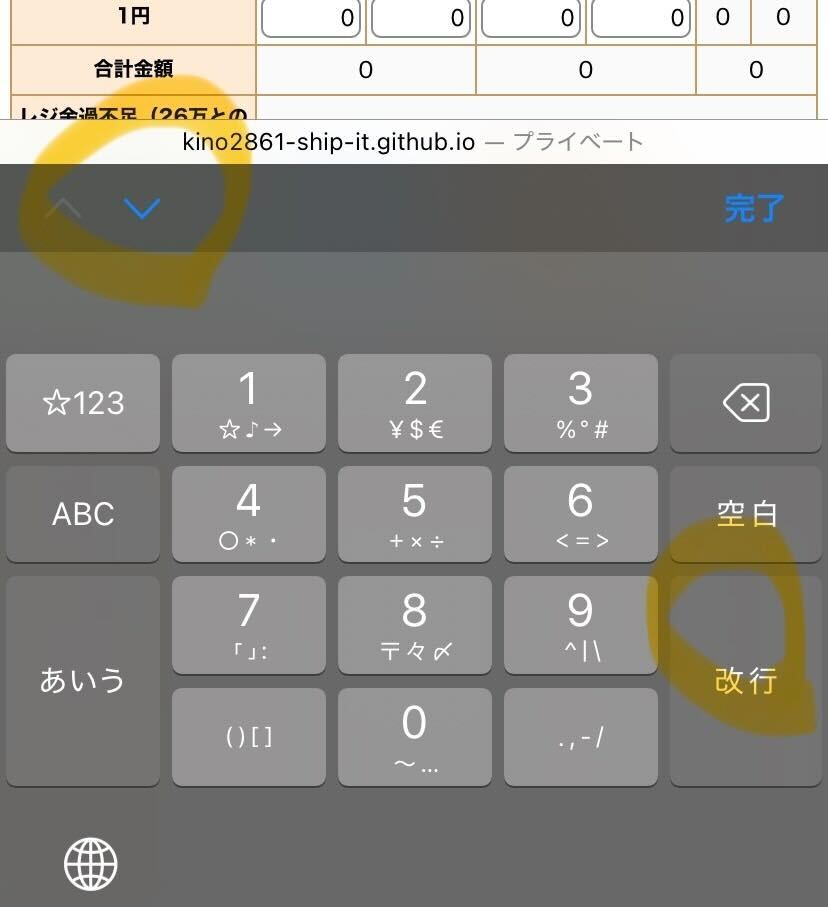

レジ金ふりわけくんは締め作業時のレジ締め周りの計算を行うツールです！✌️
前のレジの振り分け画面に寄せているので勘で使えると思いますが、一応使い方をメモしておきます📝
ぼーっと書いてたら長くなっちゃったので、必要なさそうなところは読み飛ばしてください🫠
まず、総枚数、総棒金本数という項目にレジにあるお金と棒金の数を入力します。
iphoneだと確定キーで下、上のほうにある「^」←こんな感じのキーで左右のタブに移動できる、はずです。多分。

次にレジ残枚数、レジ棒本数という項目に翌日レジに残す（金庫に入れる）お金の数を入力します🤳
(レジ金過不足という項目に26万円との誤差を表示しているので参考にしてください！)
入金枚数、入金棒本数という項目には入金バッグに入れるお金（レジにあるお金とレジに残すお金の差）の数を自動計算して表示しています。
合計金額も表示しているので、レジに表示されている合計金額と一致しているかの確認に使ってください！
入力ボックスが赤くなっているときは、翌日レジに残すお金がレジにあるお金を上回ってしまっているので修正してください⚠️
なお、今のところセーブ機能などはつけていないので、入力内容はページをリロードすると消えてしまいます😢
振り分けが終わったら念のためスクショしておくことを強くお勧めします！
プリセット、リセット、デバックという3つのボタンがあります！
プリセットボタンはレジ残枚数、レジ棒本数の入力を途中まで行うボタンです。
総枚数と総棒金本数を入力した後に押すと、以下のように値を自動入力します。
| 10000円/2000円 | 0枚 |
| 5000円 | 20枚、足りなければある分だけ |
| 1000円 | 35枚、足りなければある分だけ |
| 500円～10円 | 棒金4本、足りなければある分だけ |
| 5円/1円 | 棒金あるだけ |
初めの仮入力作業が面倒なときに使ってみてください🤩
26万円に揃えるボタンではないので、押した後は手動で調整してください😭
リセットボタンはすべての入力値をリセットして0にするボタンです!
デバッグボタンはデバッグ作業用のボタンなので使うときは気にしないでください！🙏
どのボタンも一応、押す前に確認アラートが出るようになっているので誤タップしても大丈夫です😎
金庫と入金バッグに入れたお金をチェックボックスで確認できる表です！
特に重要な機能ではないのですが、心配性の方はレシートにチェックをつけながら確認する要領で使ってください✅
自分のスマホでしか動作確認できていないので、うまく動かなかったり、使いづらい部分があったらぜひ教えてください！
以上です！あざした😭